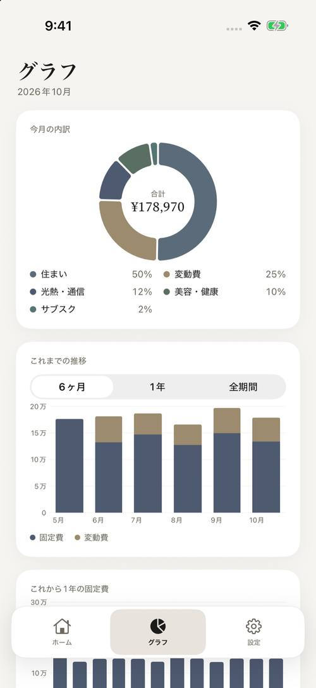
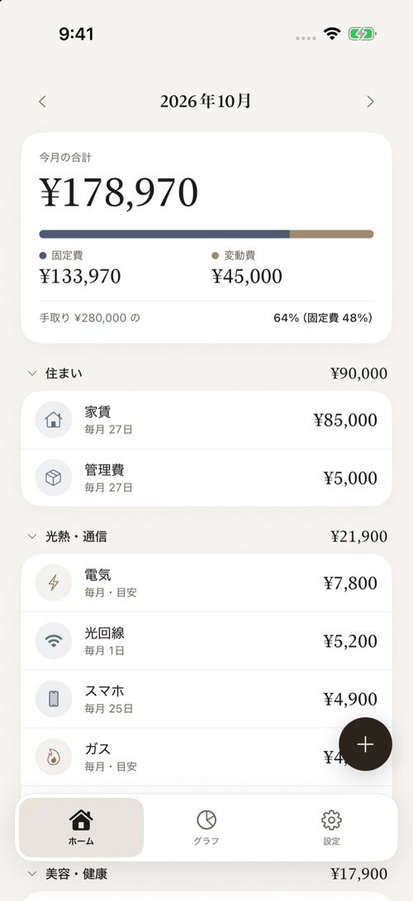

毎月の固定費が、ひと目で分かる。
家賃・サブスク・美容院・年払いの会費。頻度がばらばらな支払いをひとつの画面に並べて、今月いくらか、これから1年のどの月に山が来るかを、ゆるく眺められます。
- 使う場面
- 固定費の把握
- 使える端末
- iPhone
- 記録の置き場所
- この端末の中


ひと目で、今月の合計
今月の合計と、固定費・変動費の比率、手取りに対する割合がホームの一番上に並びます。見たいときに開くだけ。
頻度がばらばらでも
毎月・2ヶ月ごと・6週ごと・年払い・2年ごと・月を指定。実際に払う月にその額が乗り、「月割りで見る」でならした額にもできます。
山が、1年先まで見える
自動車税や車検のような年に一度の支払いも、これから1年の固定費の棒グラフで山として見えます。
変動費は、ひとつだけ
食費や日用品はカテゴリーごとに、ひと月分の金額をひとつ入れるだけ。1回ごとの記録は要りません。
80のプリセット、着せ替え
家賃からジム・年会費・NISA まで80種。金額は自分で入れます。アイコンと12色で、見た目を整えられます。
値上げも、履歴に残る
金額を変えると、表示中の月から新しい額に。過去の月はそのままなので、推移グラフに値上げの跡が残ります。
まずは無料で、ずっと使えます。
固定費と変動費を合わせて5件までは無料です。もっと管理したくなったら、サポーター（年額）または買い切りで上限を解除できます。有料では CSV 書き出しと、画像での保存・共有も使えます。
表示は App Store 価格（税込）です。年額は自動更新、買い切りは一度きりのお支払いで、自動更新はありません。無料のままでも、既存の項目の閲覧・編集・グラフはお使いいただけます。詳しくは 利用規約 と 特定商取引法に基づく表記 をご覧ください。
あなたの家計は、あなたのもの。
記録はすべてあなたの端末の中に保存されます。アプリには、アカウント登録も、銀行やカードとの連携も、広告や解析ツールもありません。iCloud へのバックアップは任意で、あなた自身の iCloud Drive にだけ保存され、開発者には届きません。詳しくは プライバシーポリシー をご覧ください。
Costs はどんなアプリですか？
家賃・サブスク・美容院・年払いなどの固定費を並べ、今月の合計と、これから1年の山をひと目で見せる iOS の家計簿です。変動費は、カテゴリーごとにひと月分の金額をひとつ入れるだけです。
無料で使えますか？
はい。固定費と変動費を合わせて5件まで無料です。それ以上は、年額 ¥300（自動更新）または買い切り ¥980 で上限を解除できます（App Store 価格・税込）。年額は購読中のみ上限を解除します。有料では CSV 書き出しと、画像での保存・共有も使えます。
データは外部に送られますか？
いいえ。記録は端末の中にだけ保存され、アプリにはアカウント登録・銀行やカードとの連携・広告・解析ツールがありません。iCloud へのバックアップは任意で、あなた自身の iCloud Drive にだけ保存され、開発者には届きません。
年払いや2ヶ月ごとの支払いはどう扱いますか？
頻度は「毎月・◯ヶ月ごと・毎年・◯週ごと・月を指定」から選びます。初期設定では、実際に払う月にその額を計上し、年払いを勝手に12で割ることはありません。「月割りで見る」をオンにすると、毎月ならした額で見られます。
変動費はどう記録しますか？
食費・日用品・交際費などのカテゴリーごとに、ひと月分の金額をひとつ入れます。買い物のたびに記録する必要はありません。細かく記録したい方には向きません。